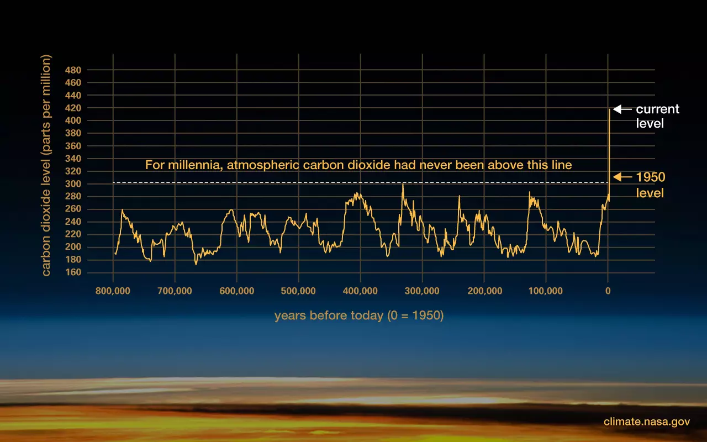

An Overview of Climate Change
An Overview of Climate Change
There is unequivocal evidence that Earth is warming at an unprecedented rate. Human activity is the principal cause.
Earth's climate has changed throughout history. Just in the last 800,000 years, there have been eight cycles of ice ages and warmer periods, with the end of the last ice age about 11,700 years ago marking the beginning of the modern climate era — and of human civilization. Most of these climate changes are attributed to very small variations in Earth’s orbit that change the amount of solar energy our planet receives.

The current warming trend is different because it is clearly the result of human activities since the mid-1800s, and is proceeding at a rate not seen over many recent millennia.1 It is undeniable that human activities have produced the atmospheric gases that have trapped more of the Sun’s energy in the Earth system. This extra energy has warmed the atmosphere, ocean, and land, and widespread and rapid changes in the atmosphere, ocean, cryosphere, and biosphere have occurred.
Earth-orbiting satellites and new technologies have helped scientists see the big picture, collecting many different types of information about our planet and its climate all over the world. These data, collected over many years, reveal the signs and patterns of a changing climate.
Scientists demonstrated the heat-trapping nature of carbon dioxide and other gases in the mid-19th century. Many of the science instruments NASA uses to study our climate focus on how these gases affect the movement of infrared radiation through the atmosphere. From the measured impacts of increases in these gases, there is no question that increased greenhouse gas levels warm Earth in response.
Ice cores drawn from Greenland, Antarctica, and tropical mountain glaciers show that Earth’s climate responds to changes in greenhouse gas levels. Ancient evidence can also be found in tree rings, ocean sediments, coral reefs, and layers of sedimentary rocks. This ancient, or paleoclimate, evidence reveals that current warming is occurring roughly 10 times faster than the average rate of warming after an ice age. Carbon dioxide from human activities is increasing about 250 times faster than it did from natural sources after the last Ice Age.

The planet's average surface temperature has risen about 2 degrees Fahrenheit (1 degrees Celsius) since the late 19th century, a change driven largely by increased carbon dioxide emissions into the atmosphere and other human activities. Most of the warming occurred in the past 40 years, with the seven most recent years being the warmest. The years 2016 and 2020 are tied for the warmest year on record.
The Earth's average surface temperature has been steadily increasing since the late 19th century. The rise in temperature is largely attributed to human activities, such as burning fossil fuels and deforestation, which have increased the concentration of greenhouse gases in the atmosphere. The effects of this increase in temperature can be seen in the form of more frequent and severe heatwaves, droughts, and wildfires. The rise in temperature also contributes to the melting of ice caps and glaciers, which in turn causes sea levels to rise.
The ocean has absorbed much of this increased heat, with the top 100 meters (about 328 feet) of ocean showing warming of more than 0.6 degrees Fahrenheit (0.33 degrees Celsius) since 1969. Earth stores 90% of the extra energy in the ocean.
The ocean has absorbed about 90% of the excess heat generated by human activities since the 1950s, resulting in a steady increase in its temperature. This rise in temperature is causing widespread changes in the ocean's ecosystem, including coral bleaching, species migration, and altered ocean currents. Warmer ocean temperatures can also intensify hurricanes, typhoons, and other tropical storms, making them more destructive. Furthermore, as the ocean warms, it expands, contributing to sea level rise. The consequences of a warming ocean are far-reaching and pose significant challenges for the conservation of marine life and the sustainable use of ocean resources.

The Greenland and Antarctic ice sheets have decreased in mass. Data from NASA's Gravity Recovery and Climate Experiment show Greenland lost an average of 279 billion tons of ice per year between 1993 and 2019, while Antarctica lost about 148 billion tons of ice per year. Image: Flowing meltwater from the Greenland ice sheet
The polar ice caps and ice sheets of Antarctica and Greenland are melting at an alarming rate due to rising temperatures. This ice loss has contributed to a rise in sea levels, which threatens low-lying areas and coastal cities. The shrinking of the ice sheets also impacts the Earth's climate system by altering the planet's reflectivity, or albedo. Ice reflects a significant portion of incoming solar radiation, but as it melts, the darker ocean or land underneath absorbs more heat, which further contributes to global warming. Additionally, the melting of the ice sheets may affect ocean currents and weather patterns, leading to more extreme weather events. The consequences of ice sheet melting are significant and far-reaching, and immediate action is needed to mitigate its effects.
Glaciers are retreating almost everywhere around the world — including in the Alps, Himalayas, Andes, Rockies, Alaska, and Africa. Image: The disappearing snowcap of Mount Kilimanjaro, from space.
Glaciers around the world are rapidly retreating, and some have disappeared entirely. This retreat is primarily due to rising temperatures and is a clear indication of the impact of global warming. Glaciers are vital sources of freshwater, and their melting can lead to water scarcity in many regions. The loss of glaciers also affects ecosystems, alters river systems, and contributes to sea level rise. Moreover, the melting of glaciers can lead to landslides, rockfalls, and other hazards that pose risks to human life and infrastructure. The retreat of glaciers is an alarming indicator of the consequences of global warming and underscores the urgent need for action to reduce greenhouse gas emissions.
Satellite observations reveal that the amount of spring snow cover in the Northern Hemisphere has decreased over the past five decades and the snow is melting earlier.
The amount of snow cover on the Earth's surface has been declining over the past few decades. This decrease is due to rising temperatures, which reduce the amount of snowfall and lead to earlier melting. Snow cover is essential for maintaining the Earth's reflectivity, or albedo, as it reflects up to 90% of the incoming solar radiation. As the snow cover diminishes, the darker ground absorbs more heat, leading to further warming. The decrease in snow cover also affects freshwater resources, as snowpacks serve as vital sources of water for many regions. Moreover, the melting of snow cover can lead to flooding and landslides, causing significant damage to human life and infrastructure.
Global sea level rose about 8 inches (20 centimeters) in the last century. The rate in the last two decades, however, is nearly double that of the last century and accelerating slightly every year. Image credit: Flickr user Alan Grinberg, "Coming Ashore!", CC BY-NC-ND 2.0.
Sea level has risen by about 8 inches (20 cm) since the start of the 20th century, and the rate of rise is accelerating. This rise is due to the warming of the oceans, which causes them to expand, and the melting of ice sheets and glaciers. Rising sea levels pose a significant threat to coastal cities and low-lying areas, leading to flooding, erosion, and saltwater intrusion.

Both the extent and thickness of Arctic sea ice has declined rapidly over the last several decades. Image: Visualization of the 2012 Arctic sea ice minimum, the lowest on record. Credit: NASA's Scientific Visualization Studio
Arctic sea ice is decreasing at an unprecedented rate, with a 40% decline in sea ice cover over the past 40 years. This decline is due to rising temperatures caused by global warming, which is causing the ice to melt. The loss of Arctic sea ice is having a significant impact on the global climate, as it reduces the reflectivity of the Earth's surface and contributes to further warming. Moreover, the loss of sea ice is affecting the Arctic ecosystem, leading to the displacement of species and changes in the food chain. This has implications for human populations in the region, as many rely on Arctic resources for their livelihoods.
Extreme events, such as hurricanes, droughts, floods, and wildfires, are increasing in frequency and intensity as a result of climate change. The warming of the planet is causing shifts in weather patterns and leading to more extreme weather events. These events have significant social, economic, and environmental impacts, including loss of life, displacement of populations, destruction of infrastructure, and damage to ecosystems. Furthermore, the frequency and intensity of extreme events are expected to increase in the future, posing significant challenges for communities around the world.

Since the beginning of the Industrial Revolution, the acidity of surface ocean waters has increased by about 30%. This increase is due to humans emitting more carbon dioxide into the atmosphere and hence more being absorbed into the ocean. The ocean has absorbed between 20% and 30% of total anthropogenic carbon dioxide emissions in recent decades (7.2 to 10.8 billion metric tons per year).
Ocean acidification is a result of the increasing concentration of carbon dioxide in the atmosphere, which is absorbed by the ocean and causes a decrease in pH levels. The effects of ocean acidification are far-reaching, with the potential to disrupt marine ecosystems and have a negative impact on human populations that rely on the ocean for their livelihoods. The acidification of the ocean is particularly concerning for species that rely on calcium carbonate structures, such as coral reefs and shellfish. These structures are at risk of dissolving as ocean acidity increases, leading to significant changes in marine biodiversity. Furthermore, ocean acidification can also have implications for human populations, as it can affect fish populations and the availability of seafood for consumption.